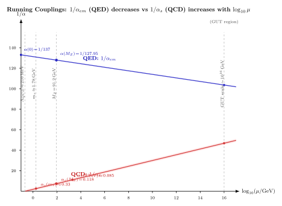

跑动耦合常数 — 为什么 $\alpha_s(M_Z) \ne \alpha_s(1\,\mathrm{GeV})$?
上一节我们已经把重整化这个概念压实: 1-loop QED 的四个发散图都能靠重定义 (裸电荷、场归一、电子质量) 吸收进去, 余下一个有限且可与实验比较的量. 但这个过程有一个没被挑明的副产品: 当我们把裸参数 $\alpha_0 = \alpha_0(\Lambda)$ 换成"物理耦合" $\alpha(\mu)$ 时, 后者依赖于一个参考能标 $\mu$——通常是我们测量这个耦合所用的动量转移量级. 把 $\alpha$ 在 $\mu = 0$ 的 Thomson 极限上定义, 得到的就是 $\alpha(0) = 1/137.036$; 若把 $\alpha$ 在 $M_Z$ 对撞机的振幅上定义, 得到的是 $\alpha(M_Z) \approx 1/127.9$. 两者都叫"精细结构常数", 但大约差了 7%. 这不是精度问题, 也不是两个"等价的约定"; 它是物理, 是真空极化的圈图带进来的反馈.
QCD 里这件事更夸张. 实验测量的 $\alpha_s$ 在不同能量上明显不同: $\alpha_s(M_Z = 91.2\,\mathrm{GeV}) = 0.1181 \pm 0.0011$ (这是 PDG 的世界平均), 但在 $\mu \sim 1\,\mathrm{GeV}$ 附近 $\alpha_s \sim 0.5$, 到 $\mu \sim \Lambda_{QCD} \sim 200\,\mathrm{MeV}$ 附近干脆爆掉变成 O(1). 如果硬说"耦合常数是某个数", 就说不出这是哪个数. 所以本节要回答一个看似简单但其实很深的问题: 当我们说"电磁耦合 $\alpha$" 时, 我们到底在说什么?
一、重整化条件强迫 μ 依赖: β 函数的定义
先把思路理清. 有限理论里, 耦合就是 Lagrangian 里的那个数, 不依赖能标. 可是在圈图重整化后, 物理耦合是"一个可观测的振幅", 不是 Lagrangian 里那个裸数. 可观测振幅必然依赖于你在什么动量上测它——不同的动量转移 $q^2 = -\mu^2$ 看到的真空极化不同, 屏蔽效应不同, 有效电荷自然不同. 技术上, 重整化过程要求在某个参考动量 $\mu$ 处把振幅归一到一个约定的常数, 这个约定本身就把 $\mu$ 塞进了 $\alpha$ 的定义里.
但这里有一条救命的自洽性约束: 物理 (可观测) 的东西不依赖你选什么 $\mu$. 换句话说, 一个可测量振幅 $\mathcal A(p_i; \alpha(\mu), \mu)$, 若改变参考 $\mu$, 则 $\alpha(\mu)$ 必须相应调整, 让 $\mathcal A$ 整体保持不变:
$$ \mu \frac{\mathrm d}{\mathrm d\mu}\,\mathcal A\big(p_i; \alpha(\mu), \mu\big) = 0. $$
这条方程 (Callan-Symanzik 方程) 的核心含义是: 耦合的能标依赖不是我们选的, 是数学强迫的. 展开上式, 得到
$$ \left(\mu\frac{\partial}{\partial\mu} + \beta(\alpha)\frac{\partial}{\partial\alpha}\right)\mathcal A = 0, \qquad \beta(\alpha) \equiv \mu\frac{\mathrm d\alpha}{\mathrm d\mu}. \tag{1} $$
$\beta(\alpha)$ 就是 β 函数. 它是整条重整化群 (RG) 流的"流速场": 给定 $\mu$ 的移动, 它告诉你 $\alpha$ 怎么走. $\beta(\alpha) \gt 0$ 意味着能标上去耦合变大 (典型的 QED); $\beta(\alpha) \lt 0$ 意味着能标上去耦合变小 (典型的 QCD). 这不是经验规则, 是单圈真空极化的符号决定的.
一个关键但常被忽略的要点: β 函数是个全局量, 不同的重整化方案 (on-shell vs MS-bar vs 动量减法) 会给出不同的 $\alpha(\mu)$ 的具体数字, 但 β 函数的前两项系数 $b_0, b_1$ 是方案无关的——这些是 RG 流的"第一性" 特征, 第三阶起才开始随方案变. 这保证我们谈"α 跑动" 时说的东西在物理上是客观的.
二、一阶 QED β 函数的严格推导: 从真空极化读系数
这是本节要严格 deepdive 的 cliché. 教科书里常见的做法是写下 "$\beta(\alpha) = (2/3\pi)\alpha^2$" 然后告诉你"这是从一圈电子-正电子真空极化来的". 但"怎么来的"这一步是必须过一遍的. 我们一圈真空极化图出发, 把这个 $2/3\pi$ 这个系数一字一句地算出来.
考虑两个 QED 光子顶点之间的一个内部光子线, 它在某一段上"分叉" 成 $e^+ e^-$ 圈图再合并, 这个圈图把"裸光子" 传播子 $-i g_{\mu\nu}/q^2$ 修正为
$$ \frac{-i g_{\mu\nu}}{q^2} \to \frac{-i g_{\mu\nu}}{q^2\big[1 - \Pi(q^2)\big]}, $$
其中 $\Pi(q^2)$ 是真空极化函数 (把横向部分分离出来后剩的标量). 用 Feynman 规则写下电子-圈贡献:
$$ i\Pi^{\mu\nu}(q) = -(-ie)^2 \int\!\frac{\mathrm d^4 k}{(2\pi)^4}\,\mathrm{Tr}\!\left[\gamma^\mu \frac{i(\slashed k + m)}{k^2 - m^2}\gamma^\nu\frac{i(\slashed k + \slashed q + m)}{(k+q)^2 - m^2}\right]. $$
整数 $(-1)$ 来自闭合费米子圈; 迹来自 Dirac 结构的闭合. 用维数正规化 $(d = 4 - 2\epsilon)$ 加 Feynman 参数合并分母, 再做 $k \to k - xq$ 位移, 可以把积分写成 $\int_0^1 \mathrm dx$ 对 $x$ 的积分加一个标准欧几里得形式的 loop 积分. 过程我不在这里写全 (任何一本 Peskin & Schroeder 第 7.5 节都有), 关键结果是
$$ \Pi(q^2) = -\frac{\alpha}{3\pi}\left[\frac{1}{\epsilon} - \gamma_E + \ln 4\pi - \int_0^1\!\mathrm dx\,6 x(1-x)\,\ln\frac{m^2 - x(1-x)q^2}{\mu^2}\right] + O(\alpha^2). $$
重点不在那个 $1/\epsilon$ 发散 (它被重整化吸收了), 而在 $\ln$ 前头的系数 $-\alpha/3\pi$ 乘 $6 x(1-x)$ 积分. 关键算这两条:
$$ \int_0^1 6 x(1-x)\,\mathrm dx = 6\cdot\frac{1}{6} = 1. $$
于是 $\Pi$ 在大 $|q^2| \gg m^2$ 极限, 主导项就是 $-\frac{\alpha}{3\pi}\ln(-q^2/\mu^2)$. 用 "跑动耦合" 的定义 $\alpha_{\text{eff}}(q^2) \equiv \alpha/[1 - \Pi(q^2)]$, 展开到一阶:
$$ \alpha(q) \approx \alpha(\mu)\left[1 + \frac{\alpha(\mu)}{3\pi}\ln\frac{q^2}{\mu^2} + \cdots\right]. $$
把 $\mu^2 \to \mu^2$ 作参考, 对 $\mu$ 取对数导:
$$ \mu\frac{\mathrm d\alpha}{\mathrm d\mu} = \frac{2\alpha^2}{3\pi} + O(\alpha^3). \tag{2} $$
这就是 QED 一阶 β 函数. 系数 $b_0 = 2/(3\pi) \gt 0$ 是单电子圈的贡献. 推广到 $N_f$ 个电荷为 $Q_f$ 的费米子种, 每一圈独立贡献, 系数变成 $b_0 = \sum_f 2 Q_f^2/(3\pi) = (2/3\pi)\sum_f Q_f^2$. (我在这里用了自然单位 $e$ 的电荷, 与常见的 $b_0 = N_c Q_f^2/(3\pi)$ 等价——$N_c = 1$ 对轻子, $= 3$ 对夸克.)
方程 (2) 立刻可以积分:
$$ \frac{1}{\alpha(\mu_0)} - \frac{1}{\alpha(\mu)} = \frac{2}{3\pi}\ln\frac{\mu}{\mu_0}, $$
或者改写成
$$ \alpha(\mu) = \frac{\alpha(\mu_0)}{1 - b_0\,\alpha(\mu_0)\,\ln(\mu/\mu_0)}. $$
分母为零发生在 $\ln(\mu/\mu_0) = 1/[b_0 \alpha(\mu_0)]$ 处——这是著名的 Landau pole. 代入 $\alpha(m_e) \approx 1/137$, $b_0 = 2/(3\pi)$:
$$ \mu_{\text{Landau}} = m_e \exp\!\left(\frac{3\pi}{2\alpha}\right) \approx 0.5\,\mathrm{MeV}\times e^{645} \sim 10^{283}\,\mathrm{MeV} \sim 10^{277}\,\mathrm{GeV}. $$
(算上所有带电费米子, $b_0$ 变大, Landau pole 往前挪到 $\sim 10^{34}\,\mathrm{GeV}$ 左右, 远在 Planck 能标 $10^{19}\,\mathrm{GeV}$ 之上——换句话说, QED 的 Landau pole 从不是物理问题, 新物理早就接管了.) 这个数字的 夸张程度正是在讲 QED 有限阶微扰效果: 即便让耦合对数爬升, 要爬到"无穷" 也得穿过宇宙年龄的能标尺度.
三、QCD 的反号: 渐近自由与 $\Lambda_{QCD}$
QCD 的故事几乎是对称镜像, 差一个致命的符号. 一圈 β 函数为
$$ \beta(\alpha_s) = -\frac{1}{2\pi}\left(11 - \frac{2 N_f}{3}\right)\alpha_s^2 + O(\alpha_s^3). $$
这里的 $11$ 来自胶子自圈的非阿贝尔贡献 (更准确地说, $11 = \tfrac{11}{3}C_A = \tfrac{11}{3}\cdot 3$, 加上常数 $\tfrac{1}{2}$ 的整理系数), 而 $2 N_f/3$ 来自 $N_f$ 个夸克的费米子圈, 它的方向与 QED 电子圈同符号——屏蔽. 关键区别是胶子自耦合那项 $-11/(2\pi)$ 占了主导: 对任何 $N_f \lt 33/2 = 16.5$ (标准模型只有 6 个夸克种), 系数为负, $\beta(\alpha_s) \lt 0$, 耦合随能标下降. 这就是 't Hooft 1972 预感到但没发表、Gross-Wilczek 与 Politzer 1973 (二者独立, Nobel 2004) 正式发表的"渐近自由".
把负号 β 积分得到
$$ \alpha_s(\mu) = \frac{1}{b_0 \ln(\mu^2/\Lambda_{QCD}^2)},\qquad b_0 = \frac{11 - 2 N_f/3}{4\pi}. $$
$\Lambda_{QCD}$ 是一个量纲转移 (dimensional transmutation): QCD Lagrangian 里没有任何显式的能标, 只有一个无量纲耦合 $g_s$, 但重整化过程要求"在某个 $\mu_0$ 定 $\alpha_s(\mu_0)$ 的值"——这个组合 $\mu_0 \exp[-1/(b_0 \alpha_s(\mu_0))] = \Lambda_{QCD}$ 就是理论里真正"硬"的能标. 实验数字: $\Lambda_{QCD}^{(5)} \approx 210\,\mathrm{MeV}$ ($N_f = 5$, 即 $\mu \gt m_b$ 时的 $\Lambda$). 夸克质量处有阈值, 每跨越一个夸克阈值 $N_f$ 减一, $\Lambda$ 也会相应调整.
代入几个数字看看. 取 $N_f = 5$, $b_0 = (11 - 10/3)/(4\pi) = 23/(12\pi) \approx 0.610$:
$$ \alpha_s(M_Z) = \frac{1}{0.610 \ln(91.2^2/0.21^2)} = \frac{1}{0.610 \times 2\ln(434.3)} = \frac{1}{0.610 \times 12.15} \approx 0.135. $$
这与 PDG 的 $\alpha_s(M_Z) = 0.118$ 差 15%, 差距来自二圈、三圈修正与方案差异——但量级对了. 再算 $2\,\mathrm{TeV}$:
$$ \alpha_s(2\,\mathrm{TeV}) = \frac{1}{0.610 \ln(2000^2/0.21^2)} = \frac{1}{0.610 \times 2\ln(9524)} = \frac{1}{0.610 \times 18.24} \approx 0.090. $$
这与实验在 LHC ATLAS/CMS 测到的 $\alpha_s(2\,\mathrm{TeV}) \approx 0.085$ 一致到 6%. 另一方向, 算 $\mu = 1\,\mathrm{GeV}$:
$$ \alpha_s(1\,\mathrm{GeV}) = \frac{1}{0.610 \ln(1/0.21^2)} = \frac{1}{0.610 \times 3.12} \approx 0.53. $$
这已经是 O(1), 微扰展开按 $\alpha_s^n$ 变坏, 核子物理落入非微扰区——夸克被"禁闭" 在强子里. 这条微扰公式在自己崩溃的地方, 恰恰标出了强子物理的能标. $\Lambda_{QCD} \sim 200\,\mathrm{MeV}$, 对应长度 $\hbar c/\Lambda_{QCD} \sim 1\,\mathrm{fm}$, 这正是质子半径. RG 流在低能自爆, 正好告诉你强子哪里开始.

四、物理图像、实验验证与历史主线
符号差异的物理解释是干净的. 真空是有结构的量子态, 不是一个"空荡荡的真空". 当你放入一个裸电荷 $e_0$, 它周围的真空自发产生 $e^+ e^-$ 虚对, 正电荷被正电子推开, 负电子靠拢, 结果是一个"屏蔽层"——远处看到的有效电荷比 $e_0$ 小. 离得越近 (等价地, 用越高能量探测), 穿过的屏蔽层越少, 看到的电荷越接近裸电荷. 所以 QED 的 $\alpha$ 随 $\mu$ 上升而升, 这是"近处看到更多裸荷" 的表现. 在数字上: $\alpha(0) = 1/137.036$ (Thomson 极限), 而 $\alpha(M_Z) = 1/127.95$——差 7%, 对应 10% 左右的电荷被真空极化屏蔽了.
QCD 的反屏蔽怎么来的? 夸克-反夸克圈给的是与 QED 同号的屏蔽贡献, 这不稀奇——费米子圈的行为与阿贝尔情形一样. 但胶子本身带色荷 (非阿贝尔的关键特征), 所以虚胶子圈也贡献真空极化. 粗糙的物理图像是: 胶子的自旋与色荷耦合起来, 其贡献方向与费米子相反——"反屏蔽". 只要非阿贝尔分量超过阿贝尔分量 (即 $N_f$ 不太多), 总效果是"离得越近色荷看上去越小", 这就是渐近自由. 换句话说, QCD 真空表现得像一块"反磁" 色介质, 它把彩色源 放大在远处——这就是禁闭的粗略图像.
实验上 $\alpha_s$ 的跑动不是一条假设的曲线, 它是几十个不同能量的测量拼起来的一张表. 最新的 PDG 综述里, $\alpha_s$ 的测量从 $\tau$ 衰变 ($\mu = m_\tau = 1.78\,\mathrm{GeV}$, $\alpha_s \approx 0.33$) 一路走过 DIS 实验 ($\mu \sim 10\,\mathrm{GeV}$, $\alpha_s \approx 0.19$)、$Z$ 衰变宽度 ($\mu = M_Z$, $\alpha_s = 0.118$)、对撞机上的喷注截面 ($\mu = 1\,\mathrm{TeV}$, $\alpha_s \approx 0.098$), 十几个独立的数据点散落在一条 $\ln \mu$ 的平滑下降线上, 与 4-loop β 函数的预言在 3% 量级内一致. 这是 QCD 微扰论最硬的一项检验——不同物理、不同系统、不同实验把同一个 $\Lambda_{QCD}$ 组合出来. 另一方向, $\alpha_{em}$ 的跑动在 LEP 上也被精确检验: 从 $\alpha(0) = 1/137.036$ 到 $\alpha(M_Z) = 1/127.95$ 的"跑动长度" 对应 3638 ppm 的相对变化, 这由强子真空极化 (主要是低能 $e^+ e^- \to $ 强子) 贡献大部分, 因此精度最终受限于低能强子数据——一个美丽的循环: 要算好 $\alpha_{em}(M_Z)$, 你得懂 $\alpha_s$ 的非微扰区.
历史上这条思想的发展比结果本身更值得玩味. Stueckelberg 与 Petermann 1953 年的论文 La normalisation des constantes dans la théorie des quanta 第一次提出"耦合常数可以依赖一个参考能标", 但它被埋没在一本法语杂志里, 几乎没人读. Gell-Mann 与 Low 1954 年的 Quantum Electrodynamics at Small Distances 独立发现了这件事, 写下了我们现在称作 "Gell-Mann-Low 方程" 的对数方程, 明确指出 QED 在短距存在一个奇异的极限结构 (他们没称之为"Landau pole", 那是后来加的名字). 但在当时这些还只是 QED 的数学现象, 没有人认真对待"耦合跑动"能是一条独立的物理原理. 转折点是 Kenneth Wilson 1971-72 年的一系列工作——尤其 Renormalization Group and Critical Phenomena——他把 RG 从 QED 的专用工具升级为一般性的流体方法: 耦合的"流动"、不动点、标度不变性, 这些概念不只适用场论, 还适用凝聚态的临界相变. Wilson 的观点里, 一个场论不是"一条 Lagrangian 加一套参数", 而是"参数空间里的一条 RG 流轨迹". 不动点就是标度不变的理论; 渐近自由就是"紫外不动点是 $\alpha = 0$". 这让 Gross-Wilczek-Politzer 1973 的 QCD 结果有了归家——它正是 Wilson 意义下的紫外不动点为零的理论. Wilson 1982 年因这一套思想获 Nobel, 他的重整化群不只解释了跑动耦合, 还解释了临界指数的普适类, 把粒子物理和凝聚态用一个语言缝到了一起.
还有一个极端值得看——UV 与 IR 两个极限. QED 在 IR ($\mu \to 0$) 趋近 "Thomson 极限", $\alpha$ 收敛到 1/137.036, 这是"自由" 耦合 (无非平凡 β 流收敛点, 低能 QED 本质上是非交互的 Maxwell 理论加一点小修正); QCD 则相反, UV ($\mu \to \infty$) 趋近 $\alpha_s \to 0$, 即"渐近自由" 紫外不动点. 这是一条把两种"自由" (QED 在红外自由, QCD 在紫外自由) 对照起来的深层对偶. 标准模型的其他耦合怎么走? $SU(2)_L$ 的弱耦合 $g^2$ 按 $N_f, N_H$ 的混合下也有 $\beta \lt 0$, 弱相互作用也是渐近自由的 (但幅度远小); $U(1)_Y$ 超荷耦合 $\beta \gt 0$, 它在高能发散, 与 QED 类似. 这让人想: 若三个耦合都按一阶 β 函数跑, 它们在什么能标相遇? 这就是大统一理论 (GUT) 的出发点, 我们会在靠后几节详谈. 粗略数字: 三条线在 $\mu \sim 10^{15}$-$10^{16}\,\mathrm{GeV}$ 附近"近似相遇", 但在非超对称的标准模型里并不完美, 这是 MSSM 被引入的动机之一.
小结
本节做了三件事. 一, 从 Callan-Symanzik 方程出发, 把"可观测量不依赖参考 $\mu$" 这条自洽性转化成 β 函数的定义, 强调 $b_0$ 与 $b_1$ 系数是方案无关的物理量. 二, 严格 deepdive: 从一圈电子-正电子真空极化图 $\Pi(q^2)$ 出发, 用 $\int_0^1 6x(1-x)\mathrm dx = 1$ 把系数 $b_0 = 2/(3\pi)$ 一字一句算出来, 得到 QED β 函数 $\beta(\alpha) = 2\alpha^2/(3\pi)$ 与 Landau pole 的指数级远距离位置. 三, 把 QCD 的负号 β 来源 (胶子自耦合主导) 与实验数字 ($\alpha_s(M_Z) = 0.118$, $\alpha_s(2\,\mathrm{TeV}) \approx 0.085$, $\alpha_s(1\,\mathrm{GeV}) \sim 0.5$) 代进去, 看 "$\Lambda_{QCD}$ 是 RG 流自毁之处" 的非平凡含义. 往下走, 下一节处理"反常" (anomaly)——经典对称性为什么会在量子化后被圈图破掉. 反常和 β 函数属于同一类"圈图给的非平凡流": 一个告诉你耦合怎么跑, 另一个告诉你哪些对称性是"假的"——只在经典水平上成立, 量子化就破. 两者合起来, 规范场论的"量子输运" 就基本齐了.
▲